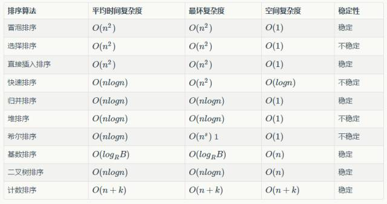
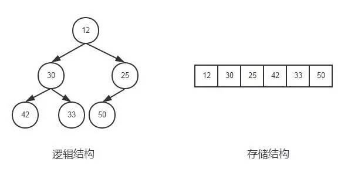

来自：简书
作者：zhutoulwz
链接：http://www.jianshu.com/p/f5baf7f27a7e
已获转载授权
排序算法是最基本最常用的算法，不同的排序算法在不同的场景或应用中会有不同的表现，我们需要对各种排序算法熟练才能将它们应用到实际当中，才能更好地发挥它们的优势。今天，来总结下各种排序算法。
下面这个表格总结了各种排序算法的复杂度与稳定性：

各种排序算法复杂度比较.png
冒泡排序可谓是最经典的排序算法了，它是基于比较的排序算法，时间复杂度为O(n^2)，其优点是实现简单，n较小时性能较好。
算法原理
相邻的数据进行两两比较，小数放在前面，大数放在后面，这样一趟下来，最小的数就被排在了第一位，第二趟也是如此，如此类推，直到所有的数据排序完成
c++代码实现
void bubble_sort(int arr[], int len)
{
for (int i = 0; i < len - 1; i++)
{
for (int j = len - 1; j >= i; j--)
{
if (arr[j] < arr[j - 1])
{
int temp = arr[j];
arr[j] = arr[j - 1];
arr[j - 1] = temp;
}
}
}
}
算法原理
先在未排序序列中找到最小（大）元素，存放到排序序列的起始位置，然后，再从剩余未排序元素中继续寻找最小（大）元素，然后放到已排序序列的末尾。以此类推，直到所有元素均排序完毕。
c++代码实现
void select_sort(int arr[], int len)
{
for (int i = 0; i < len; i++)
{
int index = i;
for (int j = i + 1; j < len; j++)
{
if (arr[j] < arr[index])
index = j;
}
if (index != i)
{
int temp = arr[i];
arr[i] = arr[index];
arr[index] = temp;
}
}
}
算法原理
将数据分为两部分，有序部分与无序部分，一开始有序部分包含第1个元素，依次将无序的元素插入到有序部分，直到所有元素有序。插入排序又分为直接插入排序、二分插入排序、链表插入等，这里只讨论直接插入排序。它是稳定的排序算法，时间复杂度为O(n^2)
c++代码实现
void insert_sort(int arr[], int len)
{
for (int i = 1; i < len; i ++)
{
int j = i - 1;
int k = arr[i];
while (j > -1 && k < arr[j] )
{
arr[j + 1] = arr[j];
j --;
}
arr[j + 1] = k;
}
}
算法原理
快速排序是目前在实践中非常高效的一种排序算法，它不是稳定的排序算法，平均时间复杂度为O(nlogn)，最差情况下复杂度为O(n^2)。它的基本思想是：通过一趟排序将要排序的数据分割成独立的两部分，其中一部分的所有数据都比另外一部分的所有数据都要小，然后再按此方法对这两部分数据分别进行快速排序，整个排序过程可以递归进行，以此达到整个数据变成有序序列。
c++代码实现
void quick_sort(int arr[], int left, int right)
{
if (left < right)
{
int i = left, j = right, target = arr[left];
while (i < j)
{
while (i < j && arr[j] > target)
j--;
if (i < j)
arr[i++] = arr[j];
while (i < j && arr[i] < target)
i++;
if (i < j)
arr[j] = arr[i];
}
arr[i] = target;
quick_sort(arr, left, i - 1);
quick_sort(arr, i + 1, right);
}
}
算法原理
归并排序具体工作原理如下（假设序列共有n个元素）：
将序列每相邻两个数字进行归并操作（merge)，形成floor(n/2)个序列，排序后每个序列包含两个元素
将上述序列再次归并，形成floor(n/4)个序列，每个序列包含四个元素
重复步骤2，直到所有元素排序完毕
归并排序是稳定的排序算法，其时间复杂度为O(nlogn)，如果是使用链表的实现的话，空间复杂度可以达到O(1)，但如果是使用数组来存储数据的话，在归并的过程中，需要临时空间来存储归并好的数据，所以空间复杂度为O(n)
c++代码实现
void merge(int arr[], int temp_arr[], int start_index, int mid_index, int end_index)
{
int i = start_index, j = mid_index + 1;
int k = 0;
while (i < mid_index + 1 && j < end_index + 1)
{
if (arr[i] > arr[j])
temp_arr[k++] = arr[j++];
else
temp_arr[k++] = arr[i++];
}
while (i < mid_index + 1)
{
temp_arr[k++] = arr[i++];
}
while (j < end_index + 1)
temp_arr[k++] = arr[j++];
for (i = 0, j = start_index; j < end_index + 1; i ++, j ++)
arr[j] = temp_arr[i];
}
void merge_sort(int arr[], int temp_arr[], int start_index, int end_index)
{
if (start_index < end_index)
{
int mid_index = (start_index + end_index) / 2;
merge_sort(arr, temp_arr, start_index, mid_index);
merge_sort(arr, temp_arr, mid_index + 1, end_index);
merge(arr, temp_arr, start_index, mid_index, end_index);
}
}
二叉堆是完全二叉树或者近似完全二叉树，满足两个特性
父结点的键值总是大于或等于(小于或等于)任何一个子节点的键值
每个结点的左子树和右子树都是一个二叉堆
当父结点的键值总是大于或等于任何一个子节点的键值时为最大堆。当父结点的键值总是小于或等于任何一个子节点的键值时为最小堆。一般二叉树简称为堆。
堆的存储
一般都是数组来存储堆，i结点的父结点下标就为(i – 1) / 2。它的左右子结点下标分别为2 * i + 1和2 * i + 2。如第0个结点左右子结点下标分别为1和2。存储结构如图所示：

堆结构.png
堆排序原理
堆排序的时间复杂度为O(nlogn)
算法原理（以最大堆为例）
先将初始数据R[1..n]建成一个最大堆，此堆为初始的无序区
再将关键字最大的记录R[1]（即堆顶）和无序区的最后一个记录R[n]交换，由此得到新的无序区R[1..n-1]和有序区R[n]，且满足R[1..n-1].keys≤R[n].key
由于交换后新的根R[1]可能违反堆性质，故应将当前无序区R[1..n-1]调整为堆。
重复2、3步骤，直到无序区只有一个元素为止。
c++代码实现
/**
* 将数组arr构建大根堆
* @param arr 待调整的数组
* @param i 待调整的数组元素的下标
* @param len 数组的长度
*/
void heap_adjust(int arr[], int i, int len)
{
int child;
int temp;
for (; 2 * i + 1 < len; i = child)
{
child = 2 * i + 1; // 子结点的位置 = 2 * 父结点的位置 + 1
// 得到子结点中键值较大的结点
if (child < len - 1 && arr[child + 1] > arr[child])
child ++;
// 如果较大的子结点大于父结点那么把较大的子结点往上移动，替换它的父结点
if (arr[i] < arr[child])
{
temp = arr[i];
arr[i] = arr[child];
arr[child] = temp;
}
else
break;
}
}
/**
* 堆排序算法
*/
void heap_sort(int arr[], int len)
{
int i;
// 调整序列的前半部分元素，调整完之后第一个元素是序列的最大的元素
for (int i = len / 2 - 1; i >= 0; i--)
{
heap_adjust(arr, i, len);
}
for (i = len - 1; i > 0; i--)
{
// 将第1个元素与当前最后一个元素交换，保证当前的最后一个位置的元素都是现在的这个序列中最大的
int temp = arr[0];
arr[0] = arr[i];
arr[i] = temp;
// 不断缩小调整heap的范围，每一次调整完毕保证第一个元素是当前序列的最大值
heap_adjust(arr, 0, i);
}
}
其它排序代码，待补充。。。
2、八大排序算法
●本文编号1536，以后想阅读这篇文章直接输入1536即可。
●本文分类“算法”，搜索分类名可以获得相关文章。
●输入m可以获取到文章目录
更多推荐请看《15个技术类公众微信》
涵盖：程序人生、算法与数据结构、黑客技术与网络安全、大数据技术、前端开发、Java、Python、Web开发、安卓开发、iOS开发、C/C++、.NET、Linux、数据库、运维等。传播计算机学习经验、推荐计算机优秀资源：点击前往《值得关注的15个技术类微信公众号》

音乐节详情，点击原文链接
![]()